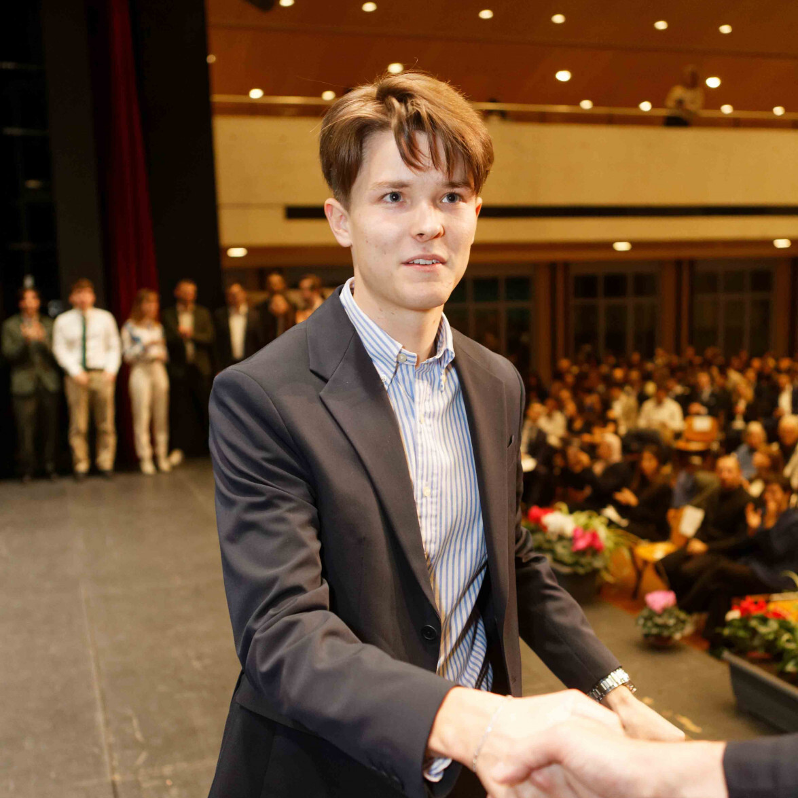

Bienvenue sur mon portfolio en ligne et mon blog.

J’ai 24 ans, j’habite à Etoy, et je suis passionné par plusieurs domaines tels que le développement web, la gestion de projet, la course à pied, l’électronique et l’informatique.
Grâce aux expériences acquises dans des projets web variés, j’ai découvert que ce qui m’intéresse particulièrement est le processus de création de solutions pour des clients. Plus précisément, je suis passionné par la “traduction” d’une demande initiale en une solution concrète et fonctionnelle.
J’aspire à acquérir davantage d’expérience et à approfondir mes connaissances des technologies liées au développement web ainsi que de leur gestion au sein d’un projet.
Mon objectif est de travailler un jour sur des projets web d’envergure, et pourquoi pas, à terme, de les superviser !
Expérience professionnelle
- 2016-2020: CFC en informatique
- 2020: Armée et service civil
- 09.2021-09.2024 Bachelor of Science HES-SO en Ingénierie des médias à l’HEIG-VD de Yverdon-Les-Bains
Expérience en développement web
- 2021 : passion-poule.ch – Création d’un site de blog dédié à l’élevage des poules et au partage d’informations autour du sujet.
- 2022 : passion-peche.ch – Développement d’un site e-commerce spécialisé dans les accessoires de pêche.
- 2022 : loungecar.ch et p-wash.ch – Développement d’un site de prise de rendez-vous pour une société de lavage automobile. Gestion de la maintenance, élaboration de campagnes marketing et optimisation SEO.
- 2022-2024 : Gatz.ch – Conception d’un site vitrine pour un service de location de voitures d’exception. Création d’une identité visuelle complète en collaboration avec Owdji.ch.
- Décembre 2023 : Développement d’un site e-commerce multilingue pour un client privé (NDA signée), en partenariat avec Owdji.ch.
- 2024 : LémanUniversel – Conception d’un site vitrine pour une entreprise spécialisée dans le chauffage et le nettoyage.